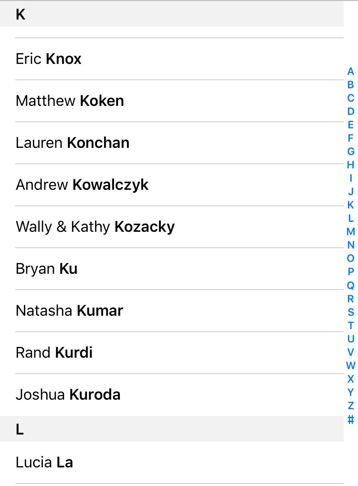

OS X Finder

OS X Messages

OS X Tweetbot

iOS Contacts

iOS Reminders

iOS Tweetbot

Pebble Menu

Pebble Old

Pebble Timeline

One of the earliest ways of listing equivalent information, the menu displays information, one or more of which is to be selected to perform further action.
A menu is a list of options or actions to be chosen or performed. The typical menu is stacked vertically. That is to say that each item is listed from top to bottom, typically in some order.
A menu is typically presented for the purpose of selecting an action to perform, or selecting a particular item to use.
The most relevant menu event is the click. A click event indicates that the user has selected a particular action or item from the list. Another event is the hover, indicating that a pointing device is explicitly within the button’s bounds. Another event is the scroll, displaying more options than what can be presented on the screen presently. Some platforms or implementations have included other components into an item, like a swipe, which can display alternative actions for the item, or a checkbox.

These are only a few of the many interfaces that can be used to display options or actions. Depending on the content displayed, it may be better to create a custom interface. In the case of the OS X color picker, instead of listing names of colors in a standard menu, they opted to recreate a crayon box and visually display what the available colors are. In the case of the Apple TV, while you could simply list all possible apps, they opted for a grid to take better advantage of the wide aspect ratio of a TV.
The basic menu being a fundamental component since the creation of the command-line interface, it has had plenty of time to mature and is on virtually every platform. As such, all usability metrics are important to it. The origins of menus date back to the days of pen and paper, as an easy way to organize equivalent information.
Users who are seeing a menu for the first time are immediately familir with its use by its similarity to the pen and paper. This makes learnability easy as the concept is present from childhood. Between platforms and across time, the fundamentals of a basic menu haven't changed which maximizes memorability.
Users must have no delays with using menus because it is the intermediate step between choosing an action or item and that action being performed or moving on with the item selection. Efficiency is of the essenence here. The primary time consumer is the scrolling of a manu that cannot fit onto the screen in its entirety. Depending on the platform, the scrolling event must be responsive.
Users should never select an item in the menu by mistake. This is more in the realm of the interface component that is used within the item in the menu than the menu itself. However, for example, scrolling the menu should not be mistaken for selecting a particular item. This is up to the platform to make sure that the compents that can be used within items don't conflict with the menu itself.
Perhaps the most important interaction design principle that a menu must follow is feedback. Users must never doubt whether:
According the Pebble design guidelines, some of the most important parts of the interface should be the speed of the interaction. Something else they emphasize is the the creation of a unique UI that isn't necessarily dependent on the Pebble UI. Simplicity is king.
This is where things can get really interesting—platform-specific sections go here. Different versions of the same system are considered to be platforms in their own right (e.g., Windows 95 buttons vs. Windows 10 buttons). Completely customized versions of a component (e.g., a unique-looking/-acting button made specifically for a game) are also acceptable here.
The outline for platform-specific entries resembles the outline already described above, except with a focus on how the platform-specific version is different. Thus, you will want some notes on appearance (i.e., more screenshots), behavior, variants, metrics, and characteristics. If some aspect is the same, then say so explicitly so that there is no confusion.
Some platform-specific instances of certain user interface components will merit such a rich discussion that they may require a sizable number of supporting assets. In that case, feel free to add subfolders to the main component folder, named after the platform under examination.
This could well be the most distinctive part of the catalog—the sections above this generally appear in user interface guidelines, albeit with a platform-specific focus. A key premise of the Paradixm project is to compare user interface elements across platforms. Thus, feel free to be creative about presentation here. You might want to display a visual gallery, for example, with links leading to individual pages for each covered platform-specific user interface component.
Provide references or links to any information, image, or media sources used.